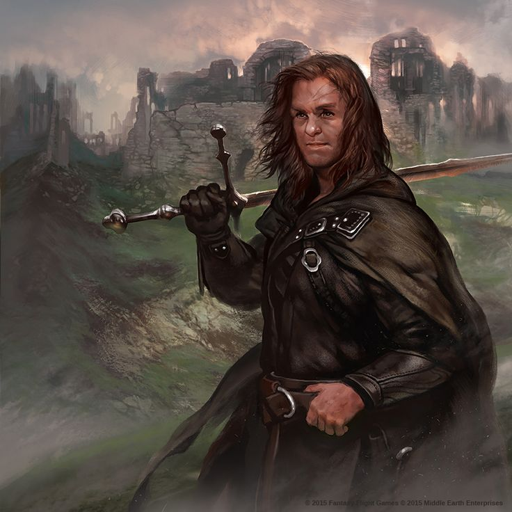
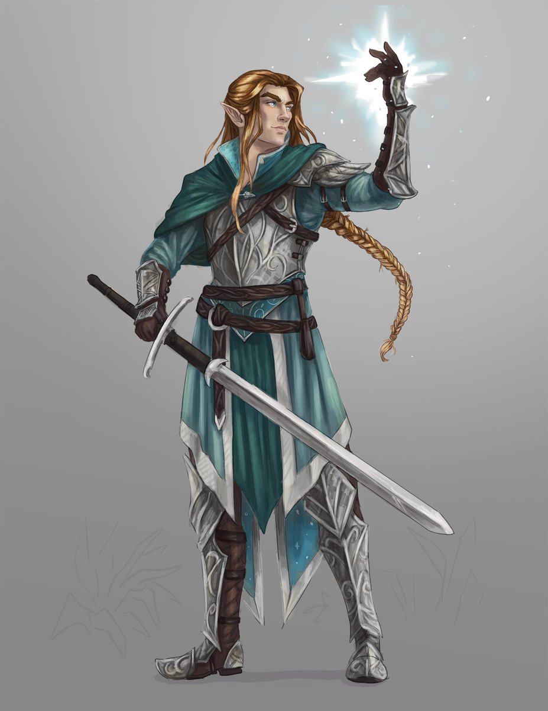
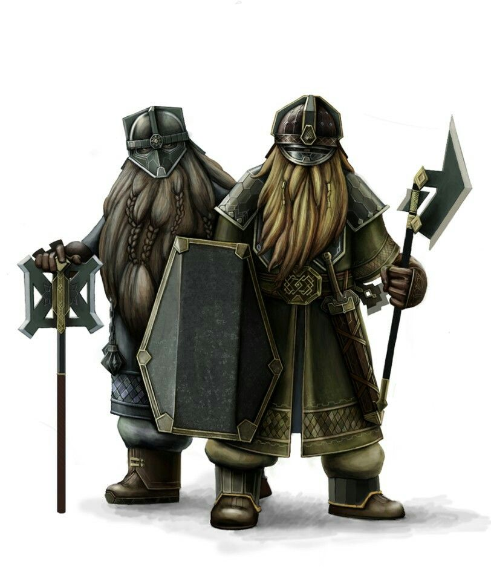
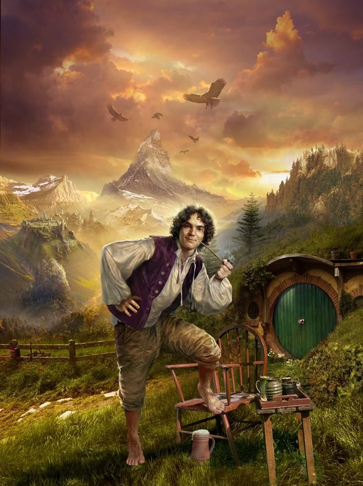

О Средиземье
Средизе́мье (англ. Middle-earth; Э́ндор (квенья Endor); Э́ннорат (синд. Ennorath); буквально — Среди́нная земля́) — континент, место действия в вымышленной вселенной легендариума Дж. Р. Р. Толкина. В Средиземье полностью разворачиваются события «Хоббита» и «Властелина колец» и частично — «Сильмариллиона» и «Неоконченных сказаний».
Толкин подготовил несколько карт Средиземья и отдельных его областей, где происходят события его произведений. Не все они были опубликованы при жизни. Основными картами были те, которые были опубликованы в «Хоббите», «Властелине колец», «Сильмариллионе» и «Неоконченных сказаниях». Большинство событий Первой Эпохи имело место на субконтиненте Белерианд, который в конце того периода ушёл под воду. Синие Горы на правом краю карты Белерианда — те же Синие Горы, которые появляются в левом верхнем углу карты Средиземья во Второй и Третьей эпохах. Карты Средиземья Толкина охватывают лишь небольшую часть мира: не показаны значительные части земель Руна и Харада, а также другие континенты.

Толкин не раз отмечал, что Средиземье находится на нашей Земле (точнее, «находилось» в далёком прошлом). Он говорил об этом и во «Властелине колец», и в письмах. По его словам, Третья Эпоха завершилась примерно шесть тысяч лет назад. Окрестности Шира — нынешняя Северо-Западная Европа (Хоббитон, например, помещён на той же широте, что и Оксфорд). Впрочем, в ответах на некоторые письма он отзывался о своих историях как о «вторичной реальности» (англ. secondary or sub-creational reality, secondary belief). Когда его в интервью в январе 1971 года спросили, можно ли считать, что описанное им происходило в иную эпоху, он ответил: «Нет… на другом уровне воображения — да». Тем не менее он подтвердил, что действие происходит на Земле; сравнивая Мидгард и Средиземье, он сказал: «О да, это одно и то же слово. Большинство людей делают ошибку, полагая, что Средиземье — другой мир или другая планета, как в научной фантастике, но это просто старомодное слово, обозначающее мир, в котором мы живём и который представлялся окружённым Океаном». В конце 1971 года он снова подтвердил, что описанное им — «краткий эпизод в истории» Земли
География
Средиземье представляет собой обширный континент с продолжительной береговой линией на западе, постепенно уходящей к юго-востоку. Берега Средиземья омываются Великим Морем (океаном). На севере воды моря Белегаэр образуют замерзающий залив Форохел, ограждённый цепями Голубых гор, где располагалось государство гномов-изгнанников из Эребора, на юге — Белфалас, на берегах которого находится гондорский порт Пеларгир и могучий замок Дол-Амрот, ещё дальше к югу — Умбар, цитадель корсаров. В стране Линдон, на северо-западном побережье Средиземья, в заливе Лун стоит эльфийский город-порт Серые Гавани — единственное в Средиземье место, откуда корабли отправляются в Валинор. В Великое море впадают реки Изен (Ангрен), Брендивайн (Барандуин) и Андуин, а также множество более мелких рек.

Континент рассечён надвое хребтом под названием Мглистые горы, на севере которых находится крепость орков Гундабад. У западного подножия гор в долине Имладрис стоит эльфийский город-крепость Ривенделл. К западу от хребта расположены лесистые равнины Арнора и Эриадора (земли Серых следопытов), с которыми на юге граничит населённый хоббитами Шир, а на северо-востоке — территория бывшего королевства Ангмар. К востоку от хребта лежат торговые города Дэйл и Эсгарот на берегах Долгого озера, вотчина Бардингов, а также великое гномье царство Эребор, расположенное в пещерах Одинокой Горы. В южных отрогах Мглистых гор находится населённый энтами лес Фангорн, к северу от него — лес галадрим Лотлориен — владение Галадриэли, а к юго-западу — Изенгард, цитадель Сарумана.
Народы Средиземья
- Люди
- Эльфы
- Гномы
- Хоббиты

Большая часть Средиземья населена людьми разных национальностей и рас. Народы Арнора и Гондора составляют дунэдайн, потомки последних верных нуменорцев (следопыты Севера и Юга, гондорская аристократия, жители Белфаласа), потомки смешанных браков (например, в Лебеннине и в землях Артэдайна и Кардолана до падения королевств) и коренное население, жившее там до прихода нуменорских колонистов (пригоряне, горцы Белых гор, жители Лебеннина). В лесах Анориэна и Рохана жили таинственные лесовики-друэдайн, — коренастые, невысокие и почти не уступающие эльфам в искусстве жить и воевать в лесу. В Ангмаре и Рудауре жили свирепые холмовики, сгинувшие после падения Ангмара, южнее обитали дикари Дунланда, Энедвайта и Минхиррита, родственные халадинам Первой Эпохи и отчаянно ненавидящие нуменорцев, эльфов и друэдайн. Население Рохана (рохиррим) — светловолосые, высокие люди, занимающиеся в основном коневодством, но ведущие преимущественно оседлый образ жизни, в отличие от своих соседей, кочевников-истерлингов, живущих в степях Востока. Наконец, люди Юга — смуглые, темнокожие харадрим, о которых мало что известно. Бардинги, озёрники и беорнинги ведут преимущественно оседлый земледельческий образ жизни, однако если в жизни бардингов и озёрников важное значение играет торговля и ремёсла, то беорнинги занимаются преимущественно земледелием и переработкой леса и неохотно пускают через свои земли чужаков. Они схожи внешне и внутренне с рохиррим, так как предки последних пришли в Каленардон с севера — из сгинувшего королевства Рованиона (причём, если бардинги и озёрники были потомками жителей окраин и беженцев с юга, то рохиррим происходили от народа Эотед, потомков королевской армии, и правил ими наследник короны Рованиона, ставший первым предводителем Эотеда и предком королей Рохана). Крайний север населяют лоссоты — охотники на морского зверя, живущие в хижинах у залива Форохел и использующие лыжи для передвижения по снегу.

Эльфы — бессмертные существа, наделённые врождённым волшебством, невероятной выносливостью и острым зрением. Они делятся на авари и эльдар (состоящих из трёх народов — ваниар, нолдор и тэлери, которые, в свою очередь, делятся на синдар и нандор). Они обитают в лесах Лихолесья (синдарские аристократы, основное население — нандор), Лотлориэна (нандор, синдар и некоторое количество нолдор), в Имладрисе (синдар, нолдор и небольшое количество прочих) и на побережье Великого Моря, в Митлонде (потомки фалатримов), Форлонде (нолдор) и Харлонде (синдар). Где-то далеко на Востоке, у Вод Пробуждения, древней прародины эльфов, живут последние и самые скрытные из эльфов — авари, отказавшиеся покинуть Средиземье и отправиться в Валинор.

Гномы — низкорослый народ, сотворённый не демиургом Эру Илуватаром, а его учеником Аулэ. Гномы обитают в подземельях Кхазад-Дума, Эребора, Эред Луин, Серых гор и Железных Холмов, а также далёких восточных гор, добывая драгоценные камни и золото и славясь как непревзойдённые металлурги, кузнецы и ювелиры. После Войны Кольца гномы народа Дурина также заняли Сияющие Пещеры Агларонда в Рохане. Мало кто видел гномьих женщин; те же, кто видел, не всегда могли отличить их от молодых гномов-мужчин

Хоббиты — маленький человекоподобный народ ростом чуть больше метра, населяющий Шир — страну на северо-западе Эриадора на левом берегу Брендивина и в небольшом количестве в Пригорье. Их родина — берега Великой Реки к западу от Рованиона. Это маленький миролюбивый народец земледельцев, живущий патриархальным демократическим строем и номинально вассальный сначала Арнору, а затем Воссоединённому королевству. Внешне хоббиты похожи на вдвое уменьшенных людей (за что их прозвали полуросликами и перианами) с большими ступнями, поросшими густым мехом. Хоббиты состоят в отдалённом родстве с людьми.